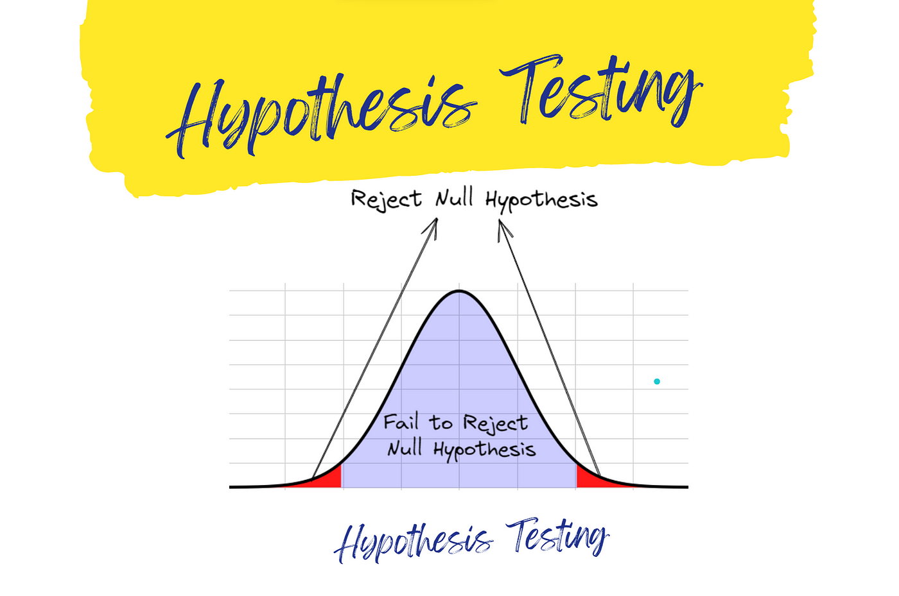
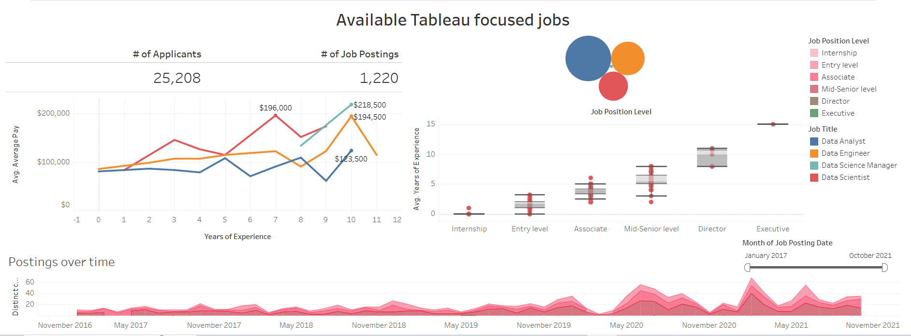

I did a data cleaning project focused on Nashville housing data. The primary goal of this project was to clean and standardize this dataset for further detailed analysis. Column name corrections, handling missing data, breaking complex address fields, converting categorical values, and removing duplicate records were all done as a part of this project.
I conducted an exploratory data analysis project on the world's best-selling phones dataset from Kaggle. The objective was to clean, organize, and get insights pertaining to the sales of phones, manufacturers, and trends over time from this dataset. This project involved using SQL to handle inconsistencies in the data, transform it for analysis, and generate meaningful reports with insights.
This project gave an all-rounded analysis of best-selling phones in the world, highlighting several insights into the performance of manufacturers and product popularity by form factor, and trends over time. The insights derived from the analysis can, therefore, be used to inform business strategies, product development, and marketing efforts in the mobile phone industry.
I conducted an exploratory data analysis project on the World Happiness Report dataset from Kaggle. The objective was to analyze happiness levels across countries, explore key socioeconomic factors influencing well-being, and uncover global trends over time.
This project involved data cleaning, transformation, and visualization using Pandas and Seaborn. I examined the relationship between happiness (Life Ladder score) and economic indicators such as GDP per capita, social support, and healthy life expectancy. Key insights were extracted using statistical measures and data visualizations, including bar plots, scatter plots, and KDE distributions.
The analysis revealed regional disparities in happiness, correlations between wealth and well-being, and fluctuations in life satisfaction over time. These insights can inform policy decisions, business strategies, and social development programs aimed at improving quality of life globally.

I performed an analysis to investigate whether women's international soccer matches produce more goals than men's, using data from official FIFA World Cup matches since January 1, 2002. I cleaned and filtered two extensive datasets containing match results for both men's and women's international games, visualized the distributions of goals scored, and conducted statistical hypothesis testing to compare the two groups. This project provided a data-driven perspective on goal-scoring trends in international soccer, offering valuable insights that can inform deeper sports analysis and reporting.

I built an interactive Tableau dashboard that dives deep into job market trends specifically for Tableau-focused roles. Using a specialized dataset of job postings, this project examines how demand for Tableau skills is evolving, highlighting salary benchmarks, role growth, and the technical expertise recruiters are prioritizing. The analysis employs advanced data cleaning and dynamic filtering to reveal clear, actionable insights tailored for both job seekers and recruiters in the Tableau space. This tool not only illuminates market shifts but also serves as a strategic asset for planning career moves and talent acquisition in today’s competitive landscape.